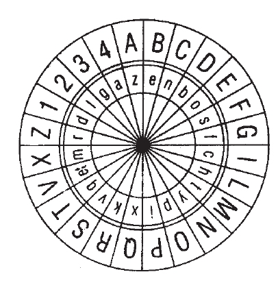

一个用人人都明白的方式来书写自己秘密的人是疯子。
——罗杰·培根《秘密的艺术与失灵的魔法》
在华盛顿特区的外围，坐落着一处鲜为人知的综合建筑群，这就是美国国家安全局（NSA）。它戒备森严，是美国防御机构的核心部门。由于NSA是美国所有通信情报（或专业人士所说的sigint）的聚集地，因此美国军队和中央情报局（CIA）在这里都安装了很多台电脑。这座大厦内部的官员们操纵着一套高科技窃听装置：美国正是通过卫星和这些接听站来跟踪全世界的敌人的。他们还编写了控制各种装置、保护官方信息流动的代码。只要是战地军官向总部传送信息，信息就会自动隐藏；只要是CIA的操作信号或者是大使馆往回发送信息，这些信息也会被自动加密。把信息保密后再进行接收的过程就是通常所说的加密，运用这项技术的数学家们自称为“密码学家”。
在计算机被广泛应用之前，加密术一直是一门神秘的技术。精通此项技术的人都在NSA或者世界各地其他类似的机构中工作，他们在那里用尽毕生精力对数学算法不断加以完善，不断地想出新的方法来破译对方的密码。也有一些业余爱好者和小学术团体以不断地钻研数学为乐。但是，密码术的核心仍然掌握在少数政府机构手中，如NSA、英国政府通信总部（GCHQ）、俄罗斯联邦政府通信和情报局（FAPSI）等。
然而，随着计算机应用的扩展以及互联网的发展，密码术迅速发展成为主流。突然间，大量的数据通过成千上万台电脑流动开来，包括金融数据、商业数据和私人数据。互联网的绝美之处，同时也是一个伟大的承诺就在于——这些数据可以通过一个非个人网络流动起来，它们可以被分割成若干不影响整体效果的小块儿，通过任何一条最快、最有效的线路实现传输。然而，信息的公开也带来了一些灾难。例如，企业如何才能保护自己的内部信息不受干扰，甚至被窃取？消费者如何才能放心地把自己的个人信息或信用卡号码交给一个遍布各地、数据随意流动的网络呢？答案很快就有了——通过加密，通过长期以来一直保护军情五处的运行、保护那些远在他国的大使们的数学方法和代码。公司和消费者通过对其交易进行加密，可以获得网络空间必需的安全保障。有了安全保障，网络就做好了迅猛发展的准备。
于是，在20世纪90年代中期，一个加密技术的新市场伴随着商业网络一起出现了。几十家公司争先恐后地向一批充满热情的新兴用户提供“安全措施”，几百个数学家利用NSA的神秘性不断谋取更高的巨额利润。这是技术前沿常有的一种混乱，各方竞相在激动人心、前景广阔的市场上相互争夺。截至1995年，加密产品的市场价值已接近10亿美元，行业分析家们由此预测这条增长之路将会是“爆炸性的”。
现在只有一个问题。加密技术至少在美国还被视为一项军事技术，所允许发展的加密技术种类还在受到种种形式的限制，至于出口种类的限制就更加严格了，而且通常认为密码技术不能掌握在私人手中。正如一位政府官员所做的解释：“我们觉得密码术就像是一种炸药：使用它要非常慎重，用后要马上交给值得信赖的人看管。”加密术的个人市场一经发展，就会迅速冲破这些限制，并且会与美国军事安全机构引发一场持久战。战争的一方是NSA、CIA、FBI，以及众多的国防机构，所有这些组织都把商业加密视为非法活动和对国家安全的威胁。另一方由众多正在成长的高科技公司和有些糟糕的“密码朋客”以及一群密码学的个人爱好者组成，他们将加密术视为强化社会权利的工具和普通市民保护自己的方式。
这是一种典型的、非常关键的平衡。美国官方认为加密软件的威力实在太大了，不能让它流入市场。他们声称，如果有人买到了这种软件，那么包括黑手党组织、恐怖分子、洗黑钱者在内的任何人都可以筑起一道难以渗透的安全堡垒。过去，美国官员（与绝大多数国家的政府官员无异）采用了全方位的技术来跟踪敌对组织及其信息：他们截获电报，窃听电台广播和电话。如果加密术成为一种网络标准，意味着将会有一个广阔而充满希望的新兴通信领域可以反窃听。更糟糕的是，由于网络本身就是一个国际媒介，因此这种安全掩护将延伸到全世界的各个角落，使得各种潜在的敌对组织都可以肆意妄为而无须担心被美国政府发现。例如，恐怖分子可以在一间安全的聊天室里进行炸弹制作的秘密交易；贩毒者可以用笔记本电脑来洗黑钱。当然，这些活动并不新鲜。但是，令美国司法部门感到震惊的是互联网在滋生出大量犯罪分子的同时，又能把他们很好地隐藏起来，这在以前从未出现过。具有讽刺意味的是，通过打开电子通信的闸门，犯罪分子相互间的交流变得更加容易了，而任何人要想捕获他们却变得更加困难。还有，正如美国联邦调查局局长路易斯·弗里赫在1997年发出的警告：“坚不可摧的加密术将使毒品制造者、间谍、恐怖分子，甚至暴徒们可以相互交流其犯罪活动和阴谋……我们的国防……将会受到危害。”
对密码朋客和相关的利益公司而言，他们对法律实施的担心远远不及对加密技术的前景，以及它所创造的天衣无缝的私人空间的向往。他们承认，加密技术的确可以使恐怖分子将其信息掩饰得更加充分，还可以为贩毒者提供更多赚钱的机会。但是，隐藏信息所付出的代价是完全值得的。他们强调，这项技术早就应该出现了。公众借助网络已经掌握了加密软件，这种软件被20世纪90年代早期传播核心算法的盗版者们和好心的人们传播开来。在莫斯科、特拉维夫等地，更高级的加密技术（运算法则更长更复杂）得到进一步的发展，甚至连美国法律机构都鞭长莫及，无法渗透。密码朋客们说，这是一个崭新的世界，信息可以自由流动，那些曾起过防御作用的旧规则已经不再适用了。
于是，20世纪90年代末期，密码朋客与国家安全局、私营企业与政府、发明创造者与维护规则者之间的战争频频爆发。这是一场无形的战争。事实上，绝大多数美国人当时连密码术为何物都不清楚，更不知道他们为何而战。他们没有听说过菲利普·齐默尔曼和怀特菲尔德·迪菲（Whitfield Diffie）这些前辈，他们不懂加密之战的复杂的专业术语。然而，尽管公众的层次不是很高，这场加密之争仍然是信息时代前所未有、至关重要的一场竞争。密码朋客及其支持者们通过购买加密技术使之成为一种私人物品，同时也夺走了曾经属于政府的东西——安全，并把它塞入个人手中。他们利用技术手段使加密术与互联网相结合，以此来攻击某些政客，声称技术进步已经从根本上改变了游戏规则。当政客们予以反击时，密码朋客又用同种技术巧妙地绕过了政府的现行法律，重新宣布了一条新的秩序。
在不到10年的时间里，互联网的出现似乎削弱了政府的权力。技术进步的速度超过了政策的发展，在此推动下，各国政府放弃了对威力无比的加密技术的限制，或者像美国那样，去削弱加密术的力量。这些政府静静地放权了：它们让密码朋客取得了胜利。这是一个很大的让步，也是网络上激进政治前途的证明。然而，密码朋客的背水一战不一定意味着加密技术的终结。由于引起争论的这些问题（尤其是法律机构和国防问题），仍然是焦点所在，在公众大声疾呼，提出这些问题之前，它们始终潜伏在背后。可笑的是，削弱政府调节该领域能力的力量——即加密技术在国际范围内的传播，可能同时正使得这种监管机制更加紧密、更加全方位化。
保密：加密术简史
与数字音乐和卫星电视相比，加密术是一门古老的技术。大概自从有了交流活动后，某个人或组织想保守某些秘密时起这项技术就开始被使用了。
加密术最原始的形式仅仅是用来携带信息，改变信息的形式以便他人无法理解，然后利用某种解码器把乱码替换成原来的意思。比方说，假定两个朋友商量好午饭之后玩牌。他们不清楚究竟会在什么时候开始，于是，弗兰克答应在准备好之后去叫路易。但是，他们的父母都不会允许他们去玩牌，于是，当弗兰克叫路易的时候，他大声喊道：“路易，我现在吃完饭了，我们晚上8点开始做作业吧。”这就是加密。路易和弗兰克定好了一个简单的密码——“做作业”的意思就是“玩牌”——他们以这种加密形式实现了信息的传送。弗兰克把它加密成他所说的话，路易把它解密成他所听到的话。
如果孩子们想要发送更详细的信息，他们可能会使用更高级一些的加密形式。假如现在弗兰克想明确告诉路易玩什么游戏，在哪里玩，而且假如他的父母已经知道“做作业”是什么意思了，因此弗兰克不得不依靠妹妹奥莉薇来传送便条。这次弗兰克的信息为：“我们在棒球场玩金罗美（一种双人纸牌游戏）吧（Let’s play gin at the baseball field）。”由于他不相信妹妹不会看他写的东西，于是用一种基本代码写下了这条信息，把字母表上的每个字母都用与之相邻的下一个字母做了替换：
ABCDEFGHIJKLMNOPQRSTUVWXYZ
BCDEFGHIJKLMNOPQRSTUVWXYZA
利用这种替换方式，弗兰克的信息读起来就变成了“MFU’T QMBZ HJO BU UIF CBTFCBMM GJFME.”路易收到信息后，用他的替换密码——即“密钥”，把这条信息转换成可读格式，然后在球场上与弗兰克见面，相信没有人会猜出他们在哪里。
但是，假定奥莉薇想追查两个男孩的计划，并且非常希望找到某种办法来对付她的哥哥。她想破译密码，并且要捉住弗兰克。她该怎么办呢？有两种方法。第一，既然弗兰克不在屋里，她可以搜查他的房间，寻找写着答案的小碎纸，每个字母的替代都排列在上面。如果她能找得到，就可以和路易同时读到这些信息，随后跟踪他们。第二，即使找不到答案，她也可以试着自己解开密码，至少这种密码不是很难解。譬如说，只要奥莉薇盯着这条信息看几分钟，就可能发现倒数第二个单词的末尾有两个M。奥莉薇意识到很少有字母以这种特殊方式出现，于是，猜测密码中的M可能要么代表L，要么代表E或S。她还能猜到撇号后面的T很可能代表S，BU合起来可能代表IS，AT，ON或者是其他常用单词。只要花足够的时间反复推敲，奥莉薇就能轻而易举地解开密码。这意味着密码将被识破，两个孩子将被“抓获”。
这种替换关系体现了密码术的动态性。一旦超越了简单的词语替换（如用“做作业”来替换“玩牌”）或者使用秘密语言，他们通常会采用字母之间相互替换或者用数字替换字母的方法。这些密码比那种词语替换要灵活和广泛得多，但同时也会产生一系列明显的缺陷。最关键的是，它们要求有某种密码手册或密钥，而这些有可能会被解开或窃取，从而使被保护的秘密遭到破译。当然，人们可以更加谨慎地隐藏他们的密钥，也可以把密钥设计得越来越复杂，但即使是这样也仍然存在一个基本问题：只要有足够的时间、金钱和耐心，几乎任何密钥都可以被窃取或破解。
因此，伴随着加密术历史的是一场不断升级的竞赛。例如，在中世纪时代，宗教人士曾经通过一种被称作为“词汇手册”的东西进行交流。词汇手册把一些以词和字母为基础的代码相混合，几个世纪以来隐藏了各种各样的宗教和政治信息，并且被公认为一种近乎完美的隐藏手段。然而，到了15世纪中期，意大利一位名叫莱昂·阿尔贝蒂（Leon Alberti）的建筑师受一位在罗马教廷做大臣的朋友的启发，提出了关于加密术的一些“新思想”。阿尔贝蒂对此显然很感兴趣，他曾经设计过皮蒂宫，还写了第一本正式出版的建筑书籍。在此之后的几年中，他潜心研究密码术和解密术，一步步创造了现在世人皆知的频率分析法。阿尔贝蒂的频率分析本质上就是前面提到过的奥莉薇的猜测方法的一种更为高级的形式：通过把特定字母或字母组合的出现频率绘制成图表来破译密码。或者，就像阿尔贝蒂在1467年前后写的一篇文章中所做出的解释：
首先，我会认真考虑字母的数目和这些数目出现的规律……在这里，元音是最重要的……没有元音就没有音节。如果你翻开某位诗人或戏剧家的作品，分别统计一页中元音和辅音的数目，你一定会发现元音的数目非常之多……如果把一页中所有的元音字母都加起来，大约有300个，所有的辅音字母加起来大约有400个。在这些元音中，我发现字母O出现的频率不少于那些辅音字母，但又比其他元音字母少。
通过分析，阿尔贝蒂证明了要想攻破任何词汇手册或者说任何一种字符替换系统是多么容易。只要存在替换方式，聪明的密码分析者（或解密者）就一定能够解开。打败解密者，把信息真正隐藏起来的唯一方法就是运用多个字母表——用取自不同字母表上的代码相互替换。用这种方式将无法再绘制频率图表。于是，阿尔贝蒂建议使用一种新的加密形式，这种形式要借助于从铜管上切下来的两个圆圈，还要以不断转换的字母搭配为基础。每个圈上都刻着字母表上的所有字母，两个圈一大一小，可以用一根细小的针从中间串起来。每次只要刻度盘的内圈一旋转，字母就会排列成不同的形式，代表着一种完全不同的替换。阿尔贝蒂声称，这将产生一种价值连城的加密技术，它将是坚不可破的。

莱昂·阿尔贝蒂的密码盘
从某种意义上说，阿尔贝蒂的“密码盘”将在未来的4个世纪中统领欧洲的加密技术。几代密码学研究人员从阿尔贝蒂的核心思想出发，运用他的密码盘方法，并在此基础上增加了若干层，使之更为复杂，16世纪达到了密码术的极点，即维吉尼亚（Vigenère）密码。在这个系统中，26个字母排列于一个巨大的表盘内，每一行中新字母表的首字母都比前一个字母表推后一个。综观整个表盘，使用者会找到一个密钥指向大表盘中特定的一行，这一行可以对信息中的每一个字母进行加密。这是一个非常辛苦的过程，同时也是一种相当复杂但很安全的处理方法，由于解密完全取决于密钥，并且这些词随着所发送信息的变化而变化，因此Vigenère密码被公认为是坚不可破的。当时的一位密码分析家写道：“密钥密码是世界上最珍贵、最伟大的，也是最安全、最可靠的东西，以前从未有人能够找到这种方法。”19世纪的企业和政府都坚信Vigenère密码是用来加密电报的最佳方法，直到1917年，《科学美国人》杂志仍然把这种方法描绘成“不可能的翻译”。
然而，《科学美国人》还不知道Vigenère密码不仅是可以被破译的，而且，事实上已经被破译了。1854年，一个名叫查尔斯·巴贝奇（Charles Babbage）的古怪的英国发明家决定攻破被公认为不可破译的密码。巴贝奇这样卖力并不足为奇，在此之前，他曾经花了好几年的时间来研究世界上第一个可编程的计算机。他下定决心要找到破解Vigenère密码的方法，于是开始慢慢地、非常仔细地寻找Vigenère密码的缺陷所在——这种结构将帮助他解开关键性密码。这种办法一点儿都不奇怪，就是找到密钥。Vigenère密码是以各种字母代码的集合为基础的，其中每一种代码都可以对信息中的字母分别加密。赋予密码神秘力量的正是密钥——把使用者引向表中特定的一行词或词组。巴贝奇借助频率分析的高级形式，就能够读出密钥，从而彻底解开信息密码。他使用的这种数学方法相当复杂，相当乏味，一般窃听者都不会感兴趣。但是，他的这种证明原理非常重要。用户要想在任一级别的安全性下对信息进行加密就必须运用大量的字母表或者繁多的信号。然后，为了对信息进行加密，他们还必须对某种密钥达成共识——一张能够识别各种可能的信号的地图。因此，密钥对于保护加密术及其薄弱环节的安全起着至关重要的作用。如果外人破译或者得到了这个密钥，他（她），如奥莉薇或巴贝奇，就能迅速破译任何以这个密钥传送的信息。找到密钥是相当困难的，但只要密钥本身存在某种基本结构——一个重复出现的单词，一个逻辑词组——它就仍然是可以被找到的。这就是加密技术的基本原理，也是现在争论的焦点所在。
可笑的是，密码分析（或解密）技术的最大突破发生于20世纪初，而加密术的需求正是在这个时候急剧上升的。电信技术和无线通信的问世意味着在瞬间出现了数以千计需要安全保障的新客户，以及几百万条通过有线和广播频道传输的未经保护的信息。人们想掩饰这些信息，而加密技术显然提供了这样一种方式。于是，电信技术的发展引发了一场发明新的密码种类和隐藏技术的竞争。尽管政府和电信公司都试图禁止使用密码，但它们在众人想方设法规避法规的情况之下也无能为力：外来语言、自编语言、简单的替换、预制字母组合铺天盖地。虽然这些方法大部分都很简单，但至少可以保护信息不被那些好奇心强的职员或某些观众无意中看到。早期的无线电通信就用过类似的方法，当时接线员通常使用日益复杂的代码来掩饰他们赖以传输信息的莫尔斯电码。
然而，密码术真正的优势在第一次世界大战与第二次世界大战期间才显现出来。当时，对信息进行保护和加密被认为是至关重要的。经过两次战争，信息流动无处不在：从指挥官传送到军队，从一个国家传送到它的盟国，从遥远的战场传送到后方司令部等。当然，这种通信在战争中是从前就有的，这也是恺撒大帝早在公元前50年就使用了一种基本的加密技术（即众所周知的恺撒替换）的原因。然而，“一战”与“二战”改变了战争的范围以及信息流动的速度与数量。随着潜水艇和飞机的出现，现代战争可以波及广阔而分散的领域；随着电报技术和无线电通信的诞生，指挥官可以与其军队和长官几乎保持同步联系。正是这种强有力的联合改变了战争的本来面貌。所有的人都想方设法读取他人的信息，同时又希望可以保护自己的信息，这意味着加密术和解密术变成了战争的重要元素。譬如，在本书第三章提到德国军队在第一次世界大战期间非常依赖一种被称作ADFGVX的威力无比的密码术，这种密码术最终被盟军破解。1914~1919年，英国的密码分析师截获并破译的德军信息估计有15000条，英军利用这些信息推测出了德军的行动，并在预期的路线上与德国的U型潜艇交火。
这种竞争在“二战”期间继续升温。两个德国工程师在第一次世界大战期间就开始修补一台电码机，实质上就是原始的阿尔贝蒂转盘的翻版。这里的逻辑非常明显：运用电力可以产生更复杂的字母组合和变化更频繁的密码。于是恩尼格玛（ENIGMA）诞生了，这台德国密码机使盟军在整个“二战”期间一直困惑不解。ENIGMA以一个键盘和一套转盘为基础，可以对任何信息进行自动加密，而无须发送者对密码技术有所了解。通过两套装置之间的相互转换，ENIGMA还可以派生出17576个不同的不规则排列，并在其间不断地转换。这标志着加密技术威力的极大增长，以至于盟军疯狂地想洞悉其中的奥秘。但即使是ENIGMA，最终还是像日本所谓的“紫色密码”一样被破解了。这两种情况都再次证明了一个时间、耐心和密钥的问题。从本质上讲，即使是变化最繁复、最快的密码也要依赖于某种基本方法；只要重复足够多的次数就一定能够找到破解的方法。
第二次世界大战后，冷战时代到来了，加密术的前景也变得非常黯淡。尽管在“二战”中涌现出一批真正的密码分析英雄，诸如曾经成功破译了ENIGMA密码的几个英国人，但这些人中的大多数在战后还是得回去做一些与密码术毫不相干的工作，并且还被禁止提起曾经做过这些工作。还有一些人聚集在国家机关中，全身心地致力于加密术和密码术的研究：如NSA和GCHQ。他们在世界上最安全的条件下再次开始在科学保密的前沿奋斗，这次他们依靠的是不断强大的计算机力量和一小部分数学上的突破。
随着时间的流逝，这批被隔离起来的专家成了一个精英团队。不管是在NSA还是在GCHQ工作的人，大部分终身都得在那里服务。他们是致力于完成一项复杂任务的边缘数学家，要把密码一点儿一点儿拆开，再重新组合到一起。许多人从计算机诞生之日起就从事着一种格式化工作，因为加密技术的基础——即把一套符号替换成另外一套符号——同时也是计算机程序或“代码”的核心。事实上，近期的史料表明，世界上第一台电子计算机其实不是1945年问世、由宾夕法尼亚大学的科学家们发明的ENIAC（电子数字积分计算机），而是Colossus（巨人计算机）。这台密级很高的机器由英国战时的密码破译者发明，用于攻破ENIGMA。由于密码研究人员背负着这个秘密，因此他们的工作和取得的成就极少被记入史册。这批人是一个几乎不受关注的群体，他们避开了公众的注意，隐姓埋名，生活在一个与世隔绝的世界里。
随着冷战的升温和计算机力量的壮大，NSA的工作对技术的要求越来越高，四周的气氛也越来越紧张。1966年，美国国家安全局花费将近10亿美元，为大约1.4万人解决了住宿问题（准确数字无从获取）。20世纪90年代初期，NSA雇用的数学家比全世界任何一个组织都要多，同时它也是计算机硬件的主要采购商。NSA在这一时期控制了由侦察机、间谍卫星、大量接收器和精密的接听装置组成的一个秘密王国。而在这个防御体系之外，几乎没有人知道它究竟是用来做什么的：这是美国智囊团的核心，也是用来掩饰和监视（即加密和解密）的世界上最大的站点。当然，这一时期的加密术还有其他用途。比方说，由于银行在20世纪六七十年代采用了电子货币转账技术，它们很快就开发出（或购买）了能够保护这些交易的加密软件。运用计算机数据库或者拥有高度保密的计算机文件的公司也是如此。这一时期也有一些私营公司提供加密程序，1976年甚至出现了加密技术的正式标准：数据加密标准（简称DES）。但是，大多数加密技术（当然也包括威力最大的加密术）仍然处于NSA的监视之下。这是一个暗自隐藏秘密信息的、沉寂的、看不见的领域。随后，互联网出现了。
网络空间的秘密
在美国，互联网的诞生与国家安全局的设立相隔不久。它是冷战时代的产物，也是美国国防机构的工具之一。早期的网络在许多方面其实就是NSA的翻版，用于保障美国通信联络神圣不可侵犯，而NSA则借助于四处搜索资料，试图找到其他机构的弱点。
这个“网络之网”的想法最初源于美国国防部及其高级研究计划署（ARPA）。20世纪60年代初期，冷战正处于高潮，整个国防机构出于自身利益都动员了起来。自1957年苏联发射人造地球卫星开始，美国官员就竭尽全力要在科学前沿打败苏联，保护美国领土，因为他们认为美国本土遭受侵略的可能性仍然很大。这些努力对许多方面都有指导作用：包括太空计划、导弹及其发射技术的进一步研究，以及新一代卫星。它们还不动声色地、不经大肆宣扬地领导了网络计算实验，而且希望不断增长的军事和研究型计算机会与某种拱形系统相联系。这些实验的背后具有双重推理。首先，如果可以把计算机连在一起，那么美国的科学家们就能够有效而经济地共享知识。将不会再有大学或研究机构被迫重复他人的工作，信息的自由流动将会激发出许多发明和创造。其次，如果这个网络上的信息可以通过多台计算机和多个研究机构来传送，整个网络——其实就是高水平通信的核心——就可以避免遭受原子弹袭击或是自然灾害的侵袭。网络在向四周传播信息的同时，也保护了信息。
不久以后，ARPA对这个“互联网络”不断进行实验，于是阿帕网（ARPANET）这个可以连接各种计算机网络的系统应运而生了。一位物理学家说，芝加哥大学利用ARPANET可以把一份文件直接传送给新罕布什尔州的同事，新墨西哥州的发射基地也可以接收到来自五角大楼的电子指令。这个系统的精妙之处在于每一条线路既不固定也不会影响其他线路，信息可以通过复杂的线路随意传输而不会被人发现——有时，在亚利桑那州可以用计算机把信息从芝加哥传送到新罕布什尔州，有时要经过亚特兰大或纽约，一条路径通常要分割到相互隔离的几个信息块中，每一块都沿着各自的路线传输。这样就无须因为信息链中的任何一部分信息丢失都会直接影响到下一部分，而害怕ARPANET上的信息遭到破坏，安全性也将不再是大问题，因为这个系统的使用者都来自同一个精英研究团队。实际上，20世纪60年代末和70年代初，在个人电脑出现之前，通过技术手段使用ARPANET的人都被认为是来自ARPANET系统所服务的科学家或者说是工程团队。
这个团队在网络上悄悄地活跃了大约20年的时间。ARPANET从1969年的4台计算机迅速发展到1985年的将近2000台的规模，于是它被更名为互联网，并且在大学研究人员、政府机构的科学家以及少数社会上的计算机工程师们中间成为一种普遍的通信方式。创造和维持这一系统结构的资金来源于国家科学基金（NSF），它担负着20世纪80年代国防部的责任，并且明确反对把网络用于任何“非学术”目的。
计算机的用途在20世纪80年代迅猛扩展，致使这一团队原有的规则最终被外部利益的泛滥所取代。研究领域之外的人们一下子都涌了进来；由于网络的设计具有公开性和非排他性，由于建立网络的基础是知识的共享而不是信息的储备，因此没有一种方法可以有效阻止他们进入这一领域。于是，20世纪80年代末期，NSF废除了科学限制政策，并且停止了对网络的资金支持。1989年，商业服务供应商获准向付费的消费者提供互联网服务，于是，互联网于1990年正式向消费者开放了。
这些功能上的转换改变了互联网。在不到两年的时间内，原来的研究团队变成了商业先锋，网络空间也受到了“新手”的冲击——包括新用户、新公司以及一些全新的观点，诸如网络空间究竟是怎样的，如何使用这一空间等。20世纪80年代初期，互联网群体大约只包括25个相互维系的科学与学术网络。到了1995年，互联网包含了超过4.4万个网络，覆盖了160个国家以及2.6万个注册商业实体。这时的用户量已接近4000万~5000万，并且仍然在以大约每月20%的速度持续增长。看着这个蓬勃发展的新空间，计算机倡导者们兴高采烈地称之为“网络空间”，美国众议院议长纽特·金里奇（Newt Gingrich）说：“这是一个知识领域。对这一领域的开拓是文明时代最值得信赖、最高尚的职业。”副总统阿尔·戈尔也热情洋溢地预言：“下一个不断变化的千年将赋予网络空间无穷的威力。”他说：“我们可以让这个装载着人类知识和创造性财富的旅行队沿着有光亮的路线走遍每一个家庭和每一个村庄。”
然而，最初的激情一旦消失，人们就发现网络的基本特征显然并非完全适用于新用户。最主要的不和谐点就是保密性。最初，网络对安全性不以为然；相反，该系统的目的正是要实现信息共享并使之遍及整个网络。人们不必担心信息被截获，也不需要加以掩饰或限制。不过，一旦互联网向投机者开放，一旦孵化出专门用于消费的商业，人们对于安全的关注就会增强。事实上，这种关注增长得很快，缺少保密性、缺少私人空间已经成了不断涌现出来的某些互联网贸易行业中最大的障碍。例如，银行希望能用电子转账和网上银行取代费用较高的出纳及存款窗口业务。但是，怎样才能让客户放心地把他们的钱以及相关信息交给一个公开的、不受任何限制的系统呢？同样，零售商希望在计算机空间进行交易，但却担心某些谨慎型客户的流失。他们如何才能使一个讨厌计算机的50岁的客户把信用卡交给一台连名字都没有的机器呢？这些公司对网上零售的好处理解得越深——例如，它们能使客户与其个人偏好相结合，或者向客户展示符合个人需求的广告——安全问题就显得越大。
当然，公司与其客户有很多种方法解决这一问题。比方说，他们可以只把部分交易放在网上，他们可以对内部通信设置保护屏障，他们可以达成协议只把部分信息公之于众。但是，解决问题的真正方法还是得像弗兰克和路易那样：想办法使他们的交流完全变成秘密。想办法隐藏信息，以便使接收者之外的任何人都无法解开密码。换句话说，解决方式就是加密——高级的，坚不可破的加密。获得这种加密技术最好的方法就是运用密码学中一项真正的突破，即近来被称作公共密钥的一项创新。
密码朋克与公共密钥
1974年，一个名叫怀特菲尔德·迪菲的30岁的密码研究者驱车去找马丁·赫尔曼（Martin Hellman）——一位未曾谋面的28岁的电子工程学教授，迪菲通过一小部分密码研究人士得知，他和赫尔曼面临着同样的困扰。两人都想去做在大多数密码研究者看来是不可能的事：即试图隐藏密钥。
回顾所有的加密方法，从弗兰克的小纸条到阿尔贝蒂的转盘，以及德国人的ENIGMA都存在一个共同的缺陷。它们都依赖于某种密钥——只要输入口令或代码，发送者就能知道如何解开密码以及从哪里开始破译。从理论上讲，密钥使加密技术变得日益复杂；例如，他们使用户运用阿尔贝蒂首创的多码代替表改变了信息的单码对照。尽管如此，密钥在实际应用中还是暴露出了自己的弱点，因为任何密钥本身都可能被盗取或识破。一旦密钥被破解，整个密码系统就完全暴露了。因此，任何加密系统的关键部分就是如何把密钥由一处传送到另外一处——用密码学的术语说就是怎样保障密钥交换的安全。
经过几代人的努力，大多数密码研究人员都承认这是一个难以解决的问题。他们推断，不通过实际接触就无法保证安全交换，最好的解决方式就是不断地更新，不断地改变，永远抢在可能出现的破译者前面。然而，迪菲决心打破这个循环。20世纪70年代早期，ARPANET刚刚兴起，迪菲就坚信电子网络的发展很快会超越官方许可的界限而进入公共领域。当这种情况真的发生后，他又进一步推断：人们将会需要一种加密技术——并非不正规的加密或政府资助的加密，而是一种高级的、容易掌握的加密技术。在这个电子世界里，人们需要以某种方式保护自己的私人空间，需要某种方法把电文译成密码，并将可以解密的密钥安全传送出去。迪菲后来回忆：“我始终都在关注着私人群体，关注与政府保密相对立的私人保密。”这就是迪菲（一个热情的尊重私人秘密的信徒）和马丁·赫尔曼准备做的事情。
两年来，数学家们始终都在尝试从每一个可能想到的角度去解决这个问题。迪菲去了斯坦福大学，以研究生的身份和赫尔曼共同工作，随后还获得了另外一名斯坦福研究生拉尔夫·默克勒的帮助。经过无数次的失败，他们终于找到了一种解决方法，奠定了现在被称为公共密钥加密法的基础。
再次回头想想倒霉的弗兰克和路易，这对于我们理解公共密钥的实质很有帮助。弗兰克迫切地想把信息传送给路易，但又苦于没有安全的传递方式。现在假设弗兰克有一个计划。他把这条信息放在手提箱里并加了一道自行车锁以保证安全，然后让奥莉薇把箱子送给路易。路易收到手提箱后又加了一道自己的锁，然后把这个加了两道锁的箱子让奥莉薇重新送回到弗兰克手中。弗兰克收到后打开了自己的锁，但留着路易的锁没打开。筋疲力尽的奥莉薇再次把箱子拖回到路易这里。这次，路易打开了自己的锁，把奥莉薇赶出房间，最后终于收到了这条宝贵的信息。在这里可以看到，虽然奥莉薇从始至终一直都拿着这条信息，但她实际上并不能真正拥有它。弗兰克和路易始终都无须改变密钥；他们分别使用自己的密钥，从而却在整个传递过程中成功地保障了信息的安全。
当然，在迪菲、赫尔曼和默克勒精心设计的方案中，这些锁和钥匙要复杂得多。他们运用了一种叫作“模”的算法，并且使用了由非常大的数字组成的密钥。尽管如此，其基本思想同弗兰克与路易故事中最后一轮所设计的方法是完全一样的。第一阶段，发送者用一个特定的数字或是运算法则对其信息进行加密。例如，假定信息是BASEBALL，并且它已经被转换成了基本的数字代码，每一个字母都由字母表中对应位置上的数字替换：
B A S E B A L L
2 1 19 5 2 1 12 12
如果发送者的密钥是乘以2，那么，BASEBALL就立刻变成了4–2–38–10–4–2–24–24。在第二轮中，接收者收到了信息并用自己的密钥进一步加密——即乘以3——于是这条信息读起来就成了12–6–114–30–12–6–72–72。当发送者重新收到这条改动过的信息后，他把自己原来的密钥反转过来，以此进行部分解密。他把每个数字除以2，得到了6–3–57–15–6–3–36–36。最后，接收者拿到了信息，把原来的密钥反转过来：即除以3，于是就得到了最初的密码：2–1–19–5–2–1–12–12，这样他就能轻而易举地将之转换成BASEBALL。注意，这里运用了一个同样的非常奇妙的逻辑方法：整个过程中没有密钥的交换，也不存在中途被截获的可能性。
1975年，迪菲、赫尔曼和默克勒解决了这个系统的基本逻辑和数学关系，迪菲也在公众密钥加密法上费尽了心机，终于迎来了真正的突破。在上面的例子中，弗兰克和路易都只有一个密钥，他们用这种密钥对信息进行了编码和解码。迪菲的突破在于用数学方法进行了修正，使弗兰克和路易理论上都有了双密钥，一个用来编码，另一个用来解码。采用这种方法，他们实际上就可以把原来的密码公开了——可以把它交给奥莉薇或是他们的父母，以及其他任何人——然后，用他们自己的私人密码来加密任何一条信息。由于这些密钥在数学上很独特，因此，任何接触到公众密钥的人几乎都没有机会破解它。从数学上讲，每一个给路易传递信息的人似乎都可能打开他的自行车锁，但只有路易一人有钥匙。这实际上意味着对异常复杂、威力无比的加密术进行了一次重大的简化。利用迪菲的公共密钥，任何一对通信者都可以快速有效地、放心地进行交流。他们无须担心密钥因四处散布而遭到破坏，无须提防窃听者，也不用不断地改变密码。有了公共密钥，加密术变得既通俗易懂又安全可靠。这为刚刚出现的电子通信世界提供了一个很大的方便。
1977年，另外一组学者成功研究出了公共密钥加密法的最后一个部分。麻省理工学院的三位数学家——罗纳德·李维斯特（Ron Rivest）、阿迪·沙米尔（Adi Shamir）和伦纳德·阿德曼（Leonard Adleman）被迪菲取得的新成果所激励，利用迪菲的理论概念想出了一个很好的办法。回想起来，这个办法简直太简单了。发送者选用两个非常大的质数据（比如，这两个数字是10的309次幂，也就是说10后面有309个零），然后他把这两个数字相乘，把所得的积作为公共的、公开的密钥。任何人都可以得到这个密钥，任何人都可以用它对信息进行加密然后发送给他。他在收到这条经自己的密钥安全包装过的信息后，就能用自己的“钥匙”把“锁”打开，而这把只有他自己才会用的“钥匙”就是那两个质数。整个过程中没有密钥的传送，只要质数足够大，别人就几乎没有可能猜出以公众密钥为基础的私人密钥。这个想法太伟大了，李维斯特、沙米尔和阿德曼于1977年为此申请了专利，世界上第一个实用的公共密钥系统诞生了。1982年，他们组建了一家合伙制公司——RSA数据安全公司，开始向大批客户提供加密软件，诸如银行、政府机构，最终发展到Sky公司这样的卫星电视公司。
回想起来，从1974年到大约1994年的这段时期几乎可以说是一个纯粹的创新时代。由于迪菲、赫尔曼和默克勒当时相信（至少迪菲相信）增强保密性对于社会是有益的，他们攻克了密钥难题。迪菲后来回忆：“保密技术仅仅为政府服务是一件很糟糕的事。”李维斯特、沙米和阿德曼随后完善了这个被视为数学难题的技术，应对了迪菲及其同伴发起的这场加密挑战。在这个商业发展跨越了技术前沿的时代，这几乎可以说是与整个数学有关的反思，而不只是因为它身后的动力。在这一阶段——即典型的技术突破的第一阶段，科学的魅力超过了商业需求，创新独占鳌头。
然而，20世纪90年代早期，互联网的闯入打破了密码术的宁静世界。私营公司和个人突然大声呼吁要求增强安全性和提供私人加密。市场也突然提出了前所未有的要求：想要某种显然只有私人密钥加密法才能提供的东西。公共密钥加密正是在这个时候进入了革新的第二个阶段，它公然走出了研究实验室，转而进入商业领域。当然，这种迁移从技术上看是明智的，因为它使20年来的边缘思想与一个现实问题完美地结合起来。这显然是一个商业承诺，但实际上很难实现。因为至少在美国，公共密钥加密的某些用途——包括一些最重要、最能获利的用途显然都是非法的。
公共密钥的策略
要想理解加密的奇特策略，就必须回顾这项技术的起源以及它在整个历史上的应用。在网络出现之前，加密技术几乎完全是一种军事工具。恺撒大帝就是用它挫败了盟军，它推动了令人费解的德国ENIGMA的发展，还提升了西方盟国与苏联之间的冷战。尽管局外人（如阿尔贝蒂或迪菲）在促进密码学发展的进程中始终都扮演着重要的角色，但这项技术的影响力通常还是掌握在政府手中——诸如NSA或英国GCHQ等秘密机构。
这种联系在冷战期间变得更加紧密，当时美国和英国都把前沿的密码学视为一门受严格限制的学科。在英国，几乎一切与密码学有关的工作都是由完全保密的GCHQ牵头进行的。根据最近的一项报告，在GCHQ工作的密码学研究人员解决公共密钥问题事实上比美国早好多年，但英国法律一直禁止他们公开其发现。其间，美国的加密术也被限制在CIA、FBI，尤其是NSA的范围之内。所有的加密技术都被官方列为“军事私密”，要经过政府部门的批准。加密技术的出口是被严格禁止的，这意味着任何一家美国公司都无法在国外销售或者使用加密产品。美国允许使用私人加密，但通常鼓励一些小用户群采用政府批准的但还不够成熟的DES。
互联网成为主流后，国家安全和执法机构被推入了一个两难境地。一方面，他们（诸如美国政府中的一部分人）看到了网络的内在潜力，不愿阻止其发展。另一方面，他们又害怕网络对自己的执法和国防构成威胁。网络空间为社会与商业的交流开辟了一个巨大的新空间，同时它也增加了犯罪分子相互交流的可能性。有了网络，恐怖分子可以轻而易举地交流与制造炸弹和化学武器有关的信息，不法组织可以发展新成员，不法之徒可以洗黑钱，新一代盗版者将可以操纵不断增长的货币和信息流，敌对政府也能以巧妙的方式不动声色地拓展其势力范围。然而，这些威胁都不足为奇，敌对政府、洗黑钱者以及恐怖分子自始至终都存在着，它们只是在这个联系更快捷，通信范围更广阔，各种活动更难察觉的网络空间里继续活动着。在这种情况下，或许安全加密本身也会被看成一种威胁。这些机构担心，如果每个人都保护自己的信息，执法就会被推入一个前所未有的真空，国家安全也会因此而遭到破坏。在一个完全是信息和秘密的世界里，政府将无能为力。
或许这种担心一部分是对剧烈的权力转移产生的自然反应。几十年来，国家安全机构一直在统治着一个与世隔绝、受到严格控制的领域，制定了一套严格的规则并全力以赴地加以执行。新来者闯入这个领域后打破了平衡，这些机构的防卫自然也就瓦解了。然而，这种担心的一大部分，而且是更重要的一部分，与技术变迁的基本动态有关。互联网导致了对加密术无止境的需求，它在技术前沿拉动着大众市场并改变了游戏的基本规则。在那个以非电子通信和冷战政治为标志的旧世界里，加密规则意义重大。这些规则可以服务于政府，服务于大众，还能很好地服务于市场，而市场本身似乎并不真正需要这种威力强大的加密技术。然而，这些规则在网络世界里将不再有任何意义。于是和从前一样，“战争”再次打响了，那些希望保留旧秩序的人与企图制造新一轮混乱的人开战了。
随后的几年，双方发动了一场旷日持久的决战，在安全指令与网络驱动要素之间争执不休。双方的第一次交锋发生于1993年，当时美国的克林顿政府想出了一个被称为“Clipper芯片”的安全措施。设计Clipper的初衷是对各方的让步：既无须向传统的法制工具妥协，又允许私人加密的存在。在Clipper计划中，所有的计算机和电话都装有一个很小的黑色电脑芯片，即Clipper芯片，它本质上将包含一个独立的私人密钥。计算机或电话被卖出之后，相应的密钥会储存在一种安全的经第三方保证的契约账户中。这个密钥会一直存在那里而不被动用，除非政府机构得到法院的许可，才准许从线路上窃取情报。这时政府才能释放密钥，从而对任何方面的信息进行跟踪和解密。
Clipper的维护者们只是想把这个新的互联网世界与传统的法制世界相结合。他们认为，这和从前用窃听器监听没有分别：这是一个抓住犯罪嫌疑人的好工具。乔治城大学杰出的计算机科学家多萝西·丹宁（Dorothy Denning）警告说：“如果没有像Clipper这样的工具，信息高速公路上所有的通信就都不能被合法截取。在一个受到诸如恐怖分子和流氓政府等有组织的国际犯罪威胁的世界里，这将是一件很荒唐的事。”其他人也同样忠于Clipper事业，他们认为这是把法制推广到计算机空间的唯一的，至少是最好的一种方法。FBI的一位名叫吉姆·卡尔斯特罗姆（Jim Kallstrom）的技术专家问道：“我们是否希望有一个数字超级高速公路呢？不仅美国国内商业运作可以在其上进行，而且还能避免罪犯们干扰合法活动。如果想要这样，我们就必须关注Clipper。”
然而，在严密的私人加密世界里，对Clipper的反应是极具煽动性的。一个由迪菲部分领导的，由密码研究者、电脑黑客和计算机工程师组成的小团体指控说：“Clipper的闯入绝非正常，它是‘网络极权国家’的先兆。”他们组成了一个被称作密码朋客的组织，并开始联合反对芯片。这个组织的奠基人之一蒂姆·梅（Tim May）声称：“战争就在我们面前，克林顿和戈尔的人都表示要热情支持‘老大哥’的发展。”其他一些新组建的团体，如电子前沿基金会和电子私人信息中心等也都竞相支持密码朋客，反对那些他们也视为是对私人空间的非正当入侵的行为。另一位反对者说：“政府所控制的钥匙可以开启我们所有的锁，不符合公众利益，这不是美国。”还有人说，“Clipper是实现由总统来控制网络空间的最后一搏。”在网络以及与网络相关的许多出版物上，反对Clipper的呼声急速高涨。批评者指控说这是一个技术上的失误，是一种政治愚弄，而且从根本上说是违反宪法规定的。他们说，拆掉这种芯片易如反掌。因此，真正的负担就落在了美国电话和计算机制造商的肩上，因为他们眼见着销量向外国竞争者不断转移。最关键的是，他们还抱怨Clipper的出现已经太晚了。1994年，梅声称，“加密的无政府”时代已于1994年来临。他写道：“这种芯片就像一项看似很小的发明，诸如用带刺的铁丝网就可以把大片牧场和农田隔开……Clipper也是由一个看似很小却不可思议的数学小发明发展而来的，而它的出现却将拆除围绕在知识产权之外的带刺的铁丝网。”他和密码朋客们坚持认为，加密将会在这个领域驻足。
在批评者的攻击下，白宫最终放弃了Clipper芯片的提案。美国克林顿政府直到1995年6月才悄悄地废除了这一方案，承认针对这一议题展开更多的公开辩论是很有必要的。然而，对Clipper的看法和国家安全机构所关注的问题并没有改变。他们反对密码朋客所呼吁的无政府状态，这将成为未来几年争论的焦点。
1994~1998年，美国政治体系受到了加密提案、议案和诉讼的冲击。出现了一系列完全矛盾的法律判决和大量立法。例如，仅1997年就提出了7条议案，每一条都受其自身利益集团的支持，许多缩略语从字面上就表明了他们的宏伟目标：例如，《加密技术保障安全与自由法案》（SAFE）表示加密议案的安全性与自由，《Pro-CODE法案》（Promotion of Commerce Online in the Digital Era）表示推进数字时代的在线商业。所有这些呼吁其实是一种很常见的思路。私人加密的需求急剧增加，同时加密产品的供给也越来越多，但根本没有相应的规则可以控制和规范这种贸易。
有两个问题特别棘手，它们都是关于各种议案和诉讼的，也都没有得到彻底解决。第一个问题与Clipper芯片的缺陷有关，国家安全组织继续呼吁为影响巨大的加密术制定规则，想出某种方法以便重新获得电话和窃听世界已有的控制手段。他们号召各联邦机构予以支持，敦促国会和克林顿政府通过增设某种入门特征（àla Clipper），或者调整基础密钥的大小（位长）来限制私人加密产品的力量。而互联网群体甚至都不屑于提及控制问题。他们受密码朋客及其同盟的引导，竭力反对任何通过秘密途径限制或企图限制私人加密复杂性的行为。或者，正如一位激进主义分子在参议院声明中所说的：“想要阻止加密就如同试图对潮汐和天气立法一样，是没有意义的。就像马东生产商试图阻止汽车的发展一样——即使是NSA和FBI也不可能做到。”另一位写道：“我摸不着头脑了，难道美国总统真的相信那些间谍和毒品制造商会采用这种危及国家安全的技术吗？他真的相信我们自己的间谍不会打着国家安全的幌子，企图证明窃听公民谈话是一种正当行为吗？……问题在于，你是否希望政府能够破解任何它认为可能破坏公共安全、国家安全或者（仅仅是可能）可接受的道德行为的密码。”
第二个问题更微妙，但争议也更大。自从加密术成为一种产品而不仅仅是一门技术以来，它一直被政府视为一种武器。在官方看来，这意味着加密技术的出口是要受到严格限制并处于美国政府机构的正规控制之下的。从商业角度对跨国公司（其实是对任何一家业务范围扩展到网络空间这一流动领域的公司）来说，这意味着在国际贸易中出售甚至使用加密产品都是相当复杂的。因此，随着互联网市场的拓展，大批商业团体都加入了密码朋客的队伍，试图游说议员放松出口控制。他们认为，这些限制完全是旧时代的遗物，现在已不再适用。这些限制在网络空间毫无意义，因为在这里，国界从根本上说已经消失了；他们认为，美国的公司最终将会把这个有利可图的加密技术市场输给限制更少的外国竞争者。一位软件发行商协会的官员争论说：“出口控制唯一的结果就是削弱我们的竞争能力。”另一位反对者问道：“当那些不想让第三方知道其先进手段的客户可以从国外买到有保证的无密钥产品时，他们怎么还会再来购买美国的产品呢？”“当局对加密技术一贯的误导政策使美国软件业受到了在21世纪无法继续保持领先地位的威胁。”评论家指出，如果不改变旧的规则，美国公司将会丧失在网络经济中的领导地位。
然而，对国家安全机构而言，有些东西比市场份额或利润更为重要。真正可怕的是，敌对政府或外国恐怖分子将可以躲在一堵无法穿透的秘密之墙的背后，躲避过去美方机构曾用过的任何一种追踪技术。这些机构直到最近才迫切意识到，这些技术对国家的安全起着至关重要的作用：譬如，涉嫌世贸中心爆炸案的一名恐怖分子拉姆西·优素福（Ramsey Yousef）在其笔记本电脑中保存着经过加密的攻击计划；同样，中央情报局的间谍奥尔德里奇·埃姆斯（Aldrich Ames）也使用加密技术。如果他们任何一人能够把信息通过加密变得更加安全，他就很可能实施自己的计划。立法者认为，正因如此，旧的规则才会继续发挥作用。或者，像美国国家安全局总法律顾问斯图尔特·贝克（Stewart Baker）所言：
他们说，（私人加密）专门用来保护拉脱维亚为自由而战的人。但事实上，唯一引起执法机构注意的是一个年轻人，由于他使用了（加密术），因此警察不知道他通过网络诱惑了哪些孩子。这就是人们为什么要用加密术的原因（这虽不是人们使用加密术的唯一目的，但确是目的之一）。由于我们迫切要求在社会规则之外有一个私人空间，因此我们正在努力打造一个新的世界。在这个世界里，那些人将会非常活跃，能够比他们现在所做的工作更多……
认为国家安全局不应该卷入这个问题就等于说政府应当予以大力支持，以便解决这个技术和社会难题。
多年以来，这些争论一直非常激烈，但始终没有结果。1996年的一项动议倾向于密码朋客一边，把加密从军需品的列表中划掉了。但随后又反过来倾向于国家安全组织，限制私人加密的长度；鲍勃·古德拉特（Bob Goodlatte）（弗吉尼亚州共和党人）在众议院上提出了一项议案，呼吁完全取消出口控制措施；由约翰·麦凯恩（John McCain）（亚利桑那州共和党人）和罗伯特·凯利（Robert Kerrey）（内布拉斯加州民主党人）在参议院上也提出了一项议案，坚决要求对影响重大的出口产品维持控制措施。双方几乎没有相互妥协的余地，而只有公认的黯淡前景。一个法学教授团队在对一项国会提案的答复中写道：“我们的政府在和平年代从未如此完全地想过要垄断哪一种形式的通信领域，事实上，它从未索要过行使发言权的特许。”到了这个阶段，争辩双方都清楚地意识到一个新市场已经出现了，大家正在做一种新的游戏。不同之处在于游戏规则的形成过程和目的。
重返市场
如果说加密问题引发的混乱造成了华盛顿立法的混乱，那么这一问题在硅谷就更严重了，那里的公司既要面对迅速发展的市场，又要面对不断变化的法律体系。在商业网络出现的早期，一些公司被困在网上，这些规则给它们带来的负担是未曾想过或者从未在意的。例如，太阳微系统公司1997年宣布可以使用由一家叫作Elvis+的俄罗斯公司设计的128位密码软件，并且把这项技术分配给它在全球的用户。太阳微系统声称，“我们花了整整两年的时间来研究这一交易涉及的法律问题，现在可以保证Elvis+的计划是完全合法的。”然而，太阳微系统在商务部开始进行调查之后仅仅几个月就退出了该项计划。无独有偶，RSA数据安全公司1997年在商业调查之前放慢了计划的实施速度，以资助一家中国软件公司的发展。在这两个例子中，公司都坚持认为它们完全符合现有的出口法律。但技术与法律之间日益扩大的裂痕显然正给诸如执行者和官僚主义者造成一些问题。
这些不断变化的规则的最大受害者是密码学爱好者菲利普·齐默尔曼，他的遭遇象征着加密政策上越来越多的混乱。与迪菲、赫尔曼和RSA团队的其他成员不同，菲利普·齐默尔曼既不是一个专业数学家，也不是一个科学家。相反，他是一个程序员和社会活动家，同时还是一个和声细语的人，满怀热情地信仰个人权利，为政府干预的手臂之长而担忧。20世纪80年代，齐默尔曼把注意力集中在美苏关系上，成了核武器冻结运动的积极分子。到了20世纪90年代，随着冷战的逐渐平息，他对密码学充满了孩童般的迷恋，专注于密码的社会含义。对齐默尔曼来说，数字时代的密码学比军事力量或数学魔术更加重要。它与权力有关，与“政府及其人民之间的权力关系”相关联。它与“隐私权和言论自由、政治集会自由、新闻自由、免于非法搜查与扣押的自由、不受干涉的自由”有关。他强调，密码术是一种“令人震惊的政治技术”。人们可以用它来掩护其通信不被爱管事的政府所察觉，可以自由交换信息而不用怕受到责备，可以知道那些政府不想让他们知道的事情，还可以呼吁采取某些政府企图停止的行动。齐默尔曼相信，所有这一切将导致专政的垮台和民主的传播。
昔日的和平倡导者受这种想法的激励，从20世纪80年代开始把RSA系统精心打造成一种能够接收的形式，这将使普通公民能够对其信息安全简便地进行加密。1991年，齐默尔曼利用可自由获取的技术文献把各种软件组合成了一个能够随意分拆的软件包。他把这个软件包称为PGP，表示“很好的秘密”。在后来的几年，PGP随着互联网的发展而传播开来。齐默尔曼回忆说：“其情形犹如燎原之火。”它被广泛应用于个人、人权组织、初露端倪的电子商务以及任何想要保守网络秘密但又无计可施的人。心存感激的用户们把PGP放到了网站和广告栏上，其他用户可以下载这一软件，使之继续推广。截至20世纪90年代中期，已经有几百万用户安装了PGP软件，它已发展成为私人加密软件的世界标准。
但是，由于PGP软件依赖于RSA系统的某种模式，要用很长、很复杂的密码（密码长达128位，是官方DES标准的两倍）。据美国海关称，鉴于这些密码已推广到世界范围，齐默尔曼在技术上违背了美国的技术控制法。1993年，政府调查人员通知齐默尔曼因涉嫌在互联网上出口非法武器而受到调查。几年之后，RSA也提起诉讼，声称齐默尔曼严重泄露了他们的财产。随着这些诉讼的拖延，齐默尔曼成了一个虚拟的偶像和象征，标志着互联网上个人权利的扩大以及大商业和大政府企图对刚刚出现的这些权利进行镇压的威胁。新成立的秘密组织触动了齐默尔曼的防卫意识，全世界的人权组织也都联合起来保护PGP软件及其正遭受围攻的发明者。他们声称：齐默尔曼是一个自由战士而不是罪犯。从根本上讲，他是一位开拓者，是他利用技术来反对政府滥用权力并维护了个人尊严，“他对于开创互联网所做的贡献比戈尔手下所有的党羽都多”。最后，RSA和美国政府都放弃了原来的想法。RSA于1998年颁布了一项解决方案，允许使用该项技术，政府也于1996年停止了该项调查。从技术上讲，齐默尔曼可能同时违反了专利权和出口控制。但他的诉讼案已说明了一些问题，因此，试图把旧规则在20世纪90年代中期再次应用到这一新空间已愈加困难。因此，在Clipper争议的迅速重演中，美国政府最终还是屈从于市场力量和先驱的抗议声。
1998年，一个新成立的网络安全公司——网络联盟公司（NAI）公然宣称要绕过美国出口控制法。这是致命的一击。1997年，NAI收购了PGP有限公司，这家公司是齐默尔曼在政府停止对他的诉讼之后草草组建的。由于有PGP软件和齐默尔曼的顾问身份，NAI一直在斟酌一个非常棘手的问题：他们究竟要用这种高级产品来做什么。这个公司控制着世界上最流行的私人加密软件，这是一个好消息。还有一个坏消息：它的用户中没有一个熟悉如何为这个软件付费，并且它的出口（至少从技术上讲）也是非法的。让他们震惊的是，NAI的经理几乎在瞬间就解决了第一个问题。他们只是给PGP的用户打了个电话，要求他们交使用费。由于90%以上的用户做的都是合法生意，他们中的大多数都很乐意支付这笔小小的费用并签约作为NAI的客户，在这种情况下，盗版不动声色地进入了商业领域。然而，第二个问题就复杂多了。就是这个问题一直困扰着Elvis+、齐默尔曼和所有从前试图在世界市场上贩卖加密软件的人。如果NAI在美国之外销售PGP软件，甚至允许其美国用户在境外使用这种软件，这就在形式上违反了美国的出口法。但是，如果NAI把对美国用户的销售限制在美国境内，这种产品就彻底没用了：没有人想要一种仅能在会话一端使用的加密技术。
1998年春天，NAI的直接闯入打破了这个法律困境。3月20日，NAI宣布将很快通过一家独立运作的瑞士公司开始销售PGP软件。瑞士研究者最近已经发展出与PGP软件功能相当的加密软件，实际上，两者极为相似，NAI在美国以外的用户可以购买瑞士的软件，并且将会与NAI在美国的PGP版本完全兼容。在一次吵闹的公开发布会上，NAI宣称，它的所有用户最终将可以“从日本或澳大利亚到美国、德国、瑞士或任何一个可能的地方安全地相互交流”。
这是一个巨大的进步。在官方看来，NAI没有违反任何法律：它没有从美国出口任何东西，没有转移过技术，没有提供过技术协助。这个公司所做的一切只是公开了PGP的源代码，即一种简单的言论自由的表达方式，然后同一家完全合法的外国公司签了约。NAI的一位高层官员说：“从根本上说，任何第三方都应该能够同非美国企业就任何一种产品签订和约，并在全世界范围内供应这种产品。”然而美国政府并不高兴。它们指控说：“这个（行动）就在我们的政策表面游移。”商务部副部长威廉·赖因施（William Reinsch）针对公司的活动开展了一次紧急调查。
NAI的执行官们很清楚他们正沿着法律的灰色边缘行走。正如NAI的一位高层经理彼得·沃特金斯（Peter Watkins）回忆时所说的：“我问自己：‘我会入狱吗？很可能不会。这就行了。’”他们打赌，涉及这场诉讼的法律将会再次向市场低头，政府也将克制其任何企图制裁NAI或是停止NAI略加掩饰的出口策略的行为。这是一个很大的赌注，但鉴于Clipper和齐默尔曼最终的结果，鉴于公众舆论的力量以及现存法律的漏洞，这也是一个相对安全的解决办法。最后，针对NAI的正式指控全都消失了。
1998年，美国克林顿政府开始摸索一种新的加密政策，用副总统戈尔的话说，这种政策“可以促使电子商务成长和繁荣”，同时，它还使执法部门“得以用21世纪的技术来打击21世纪的犯罪活动”。这个政策的细则于9月出台了，这代表着一场突破性变革的开始。自此以后，56位加密技术就可以出口到除古巴、伊朗、伊拉克、朝鲜、利比亚、叙利亚和苏丹之外的全世界任何地方，这种技术附带一次性的技术回顾并且不要求恢复密钥。超过56位的加密术（即128位，或者“牢固”加密）也可以出口了，但需要附带某种密钥恢复系统。在最令人吃惊的、同过去的政策相分离的过程中，政府还宣布：“废除许可证后，强加密（无论是否带有密钥恢复）现在也允许出口到一些工业领域了。譬如，美国公司将可以出口强加密技术，用于其总部和除上述七个国家之外的外国分支机构。”有了这些适当的规则，像NAI这样的公司就可以把加密软件自由销售给诸如保险、健康、在线零售或者银行业务等领域的任何一家公司，而这些公司实际上代表着它们最关键的业务领域。
美国官员在对新政策进行描述时认真参考了国家安全指令。例如，商务部的官员们认为，他们已经成功地改造了现有的加密体系，强加密产品的销售仍然只允许在某些行业内进行，那里已经建立起了信任，政府调节水平也比较高。然而，这条政策显然也是政府对其自身所做限制的一种承认。事实上，就在新规则出台的前几天，政府的一个高级顾问委员会已经公开了一份报告，证明了出口控制存在着内在问题，并承认对美国工业进行控制的“负面影响是非常显著的”。我们注意到美国公司在加密软件的国际市场上正逐步丧失地位，这份报告有一个不祥的预言：“美国在电子商务领域的领导地位正在逐渐削弱。”在国家安全对国家收益的微积分运算中，看来又是市场赢了。
加密之惑
从某些方面看，加密之战结束于1998年。当时，美国政府已开始摈弃自身的某些限制性政策，承认（如果不是字面上就是发自内心深处）今后将不再控制人们对秘密的掩饰和发送秘密的地点。这场战争的结束似乎回响着自由市场的胜利，甚至可以说是争取自由的胜利。在网络空间里，美国的政策似乎要承认，想要控制信息流动或是信息的保密性简直太难了。秘密将会保存在网络上，政府最终将被迫改掉原来爱窃听的习惯。
在这场涉及面更广的历史冲击中，神秘的加密之战似乎变得更加重要。如果政府真的无法在网络空间跟踪信息，如果公民个人可以沿着安全保密的信息高速公路进行交流，公民和国家之间的力量平衡就将发生变化——这种局面在美国、加拿大和法国等国家已初露端倪；而在缅甸、沙特阿拉伯等国则更加严峻。这种变化的政治重要性不容忽视。就像齐默尔曼解释的，私人加密“改变了政府和人民之间的力量对比关系。不论好坏，事实就是这样”。
然而，正确地对待加密之争并考虑到未来可能发生的变化，同样也很重要。尽管加密之争最终于1998年打成了平局，但一些摆在桌面上的问题仍然没有得到解决。不论对公还是对私都仍然留有一些严重的问题，例如，怎样对付新一代犯罪分子，怎样在一个多变的时代保护国家安全等。美国仍然保留某些对加密出口的控制（如地区限制、国别限制、所需文件等），欧盟也逐渐思考自身的加密政策。1997年，经济合作与发展组织的成员国宣布采用联合密码的指导方针；1998年，包括美国及其大多数盟国在内的33个发达国家共同决定限制64位以上的加密软件出口。当然，在其他地方政府无论何时在形式上仍然保持最严格的控制：比如，法国就同时控制着加密产品的出口及国内应用情况；以色列、俄罗斯、中国，以及其他一些国家也是如此。
作为一项政策，加密的前景依然不是很明朗。我们无法确认政府是否将完全放弃其控制权，或者更为重要的是，它们是否能够为显然是最安全的系统开设后门。回想起来，几乎任何一种加密方法最终都会被破解：如宗教人士高深莫测的词汇手册，德国的ENIGMA和维吉尼亚密码，等等。专家们已经研制出128位甚至512位的加密技术，从而证实他们对于不断增长的计算机力量已无能为力。例如，欧洲一群密码编译者1999年试图先设计一种456位的密码，进而再设计512位密码；几个月后，RSA算法的一位创始人描述了一种计算机从理论上来说能够在几天之内就破译512位密码。随着时间的推移，政府最终可能会找到一种方法，破解即使在今天仍被认为是坚不可破的加密技术。如果真这样的话，互联网新世界慢慢就会退回到那个电话、无线电和电报的旧世界：如果政府允许保留秘密，就会有秘密的存在，如果政府想要监听（无论是公开的还是秘密的），他们就什么都听得到。
另外一个更有趣的可能性与私营企业的角色有关。大部分公司（至少在美国）在这场加密之争中站在了行动自由派一方。他们反对对加密产品的出口进行限制，反对Clipper芯片，强烈赞成私人加密市场的拓展。不足为奇，他们已经站在了市场一方并且反对政府的介入。随着技术进步和加密的盛行，私营企业很可能会购买新一代的窃听技术，采用一些投机取巧而不是完全可靠的技术。例如，像日产和嘉信理财这些公司已经宣称他们监控着雇员的电子邮件并限制“不适当的”使用。一些互联网服务供应商以及最著名的美国在线（AOL）清楚地回顾了那些通过他们的网站浏览非法内容或从事非法活动的某些征兆的东西。在一些立场明确的情形下，AOL显然非常配合联邦执法机构的工作，允许它们查明和跟踪嫌疑犯的身份和行动。然而，这些情况并不能轻易取代窃听电话和私拆信件，它们建议私营企业将来可以选择与政府机构合作，制止对国家安全和私营企业构成威胁的各种行为。像AOL这样的公司毕竟不想那些对幼童进行性骚扰者或贩毒者在它们的网站上出没，它们不想让电脑黑客从毫无防备的购物者那里盗取信用卡账号，也不想让犯罪分子渗透到其银行网络。要想阻止或惩罚这种犯罪，私营企业可能需要借助公共权威的力量，依靠像FBI这样的机构来提供合法命令和武力保护，而这些东西即使是最成功的互联网公司也无法提供。实际上，私营企业最终还是需要公众的监督——至少需要公众检举那些通过私人监督揭露的犯罪行为。
然而，尽管这些都是可能的，尽管加密术曾经同战争、间谍和政府都有过联系，但互联网已经彻底改变了政府加密的规则。从前那个受到限制的技术和国家的工具已经不存在了，现在它已回到了私人手中。一个新的市场诞生了，它是过去不曾有过的，并且还否定了政府曾被迫控制传播秘密的力量。为什么这一变革会如此剧烈呢？用预言家和密码朋客的话来说，是因为互联网本身就很激进——因为它从根本上改变了力量对比关系，侵蚀了政府控制的根基。正如1993年《哈佛商业评论》上的一篇文章所写的，“信息技术是有史以来最伟大的民主主义者”，因为“高技术能够把本来不平等的人类放到平等的地位上”。也许是这样吧。但是加密术似乎也存在一些特征，这些特征使它一方面极易受这种力量转变的影响，另一方面还能避免政府的干预。
首先，让我们想想标准化的过程。在其他领域或对于其他技术而言，这往往是一件非常混乱的事情。正如我们在电报业所看到的那样，通常会突然冒出来一大堆竞争标准，大家争相控制这一市场并在其中奠定基础。由相互竞争的公司所支持的各种标准往往不一致，这种情况在早期的铁道轨距问题上就遇到过。这些标准也可能运用得很慢，很不顺利，电报业就是如此。如果所有的公司联合起来，制定一个共同的标准，它们就会遭遇通常困扰企业联盟的所有问题。如果一家公司取得了统治地位，就会出现大家熟悉的垄断问题。上面的每一种情况中，政府都会提供（至少有这种可能）一种问题之外的解决办法。通过设定一个标准或是调解一场标准之争，政府往往可以为自己铺设一条通往更平稳有序的市场之路。例如，当19世纪50年代欧洲强国同意建立一个共同的电报系统后，或者，当政府采用了船对岸无线电通信的共同规则后，这种情况就会发生。
相比之下，加密领域的标准化过程感觉就像是一种自然现象。新发明（如阿尔贝蒂的转盘，维吉尼亚密码或者怀特菲尔德和迪菲的算法）出现后，会迅速传到代码设计组织那里，上升到一种新的稳定状态，使以前的技术都遭到淘汰。与其他技术突破不同，这里没有血腥的战争，也没有疯狂的掠夺，没有人企图建立一个特定的标准或给一个正在形成的市场强加一套系统。相反，这里有一个精英管理的过程，每项技术在被打破和取代之前就先行退出了。这里不需要公正的裁判员，而且，无论在商业领域还是社会领域都无须政府的干预。
加密技术的另一个特征是拥塞。对于其他许多刚刚出现的技术而言，拥塞问题很快就会困扰前沿领域。例如，20世纪20年代中期，几百个无线电广播站纷纷设立广播频道，继而很快造成一片混乱，广播被迫中止。在普通电视以及卫星电视领域，广播公司从一开始便知道，他们不仅要同彼此竞争，而且还面临着与已几乎遍布所有频段的广播站的竞争。解决问题的唯一方法就是把这一领域分成若干部分，设定所有权，阻止一场可能导致全军覆没的冲击。这是技术前沿的一个典型问题，同时也是一种典型的解决方式：在某些方面，私人利益群体通常希望有一个执行官来解决这些秩序问题。但对于加密技术而言，秩序问题根本不存在：因为没有稀缺资源需要分割，也不存在拥塞问题。因此，这里也不存在对政府干预的内在需求。
最后，至少是到最近为止，加密世界的特征就是显然无须考虑所有权问题。加密术对于间谍和将军，数学家和解谜者，有时甚至是受到挫折的恋人们来说，都是可以利用的。但它几乎从来就不是一种商业工具，很少被视为一种财产。人类创造了密码，继而又破解了密码，但是从未拥有过密码。相反，密码要么被（同事和盟军）随便共享，要么被严格防护（不被敌人和窃听者盗用）。在互联网到来之前，除政府之外，任何人都没有理由拥有代码，于是也没有建立所有权系统甚至所有权标准。因此，除政府之外也无须强化所有权，而在其他行业，这种权利甚至可以使最坚强的开创者服务于政府。当然，随着时间的推移，这种共有思想观点几乎注定是要改变的。实际上，自1977年以来它已经在逐步改变了，当时李维斯特、沙米尔和阿德曼纷纷申请专利，把私人财产带入了与世隔绝的密码世界。由于加密市场越来越接近于商业主流，研究者可能会重新考虑共同努力和不再继续这项控制严格的研究相比，究竟哪个更有价值。但是，从政治上讲，这么做已经太晚了。在加密行业的形成时期，政府把包括加密和解密在内的全部技术都据为己有，防止他人再索要这份财产。因此，这一领域没有出现过商业强盗，也没有试图阻止他们的先驱者。
因此，加密技术在许多方面都具有独特性。它从未遇到过拥塞或调和问题，不需要外部标准，也几乎没有过突如其来的所有权压力。加密技术并不真正需要政府的干预，所以，私人力量把政府赶出其内部空间也就不足为奇了。在在线加密领域，市场已经真正能够真正地自行发展了：实现了自我调节，对各种行为能够进行调整并保持其安全性（这曾经只有政府才做得到）。这种变化的结果是很剧烈的，因为它承诺（或在某人看来是威胁）要破除对秘密的限制，给个人一种前所未有的能力，使他们的交流（包括思想，新闻及个人资料）能够逃出政府的眼睛。这是一个不容否认的关键性变化。实际上，这可能是在互联网上诞生的一次最关键的政治飞跃，它是一次技术推进型的政治变化，作为个人自由的源泉和对政府的一种妨碍，其意义可以同古登堡印刷机相提并论。
然而，这种最秘密的技术仍然引发了一系列的公共问题。当然，私人秘密本身就是一个公共问题，随着网络经济的发展，个人也许会用一套合法的权利和保护作为保守其秘密的技术支持手段。例如，私人秘密在欧盟被视为一项基本权利受到法律的保障，并写入了1995年《欧盟数据保护指令》中。在美国，类似的问题很可能也会使公民求助于政府，他们游说议员，使他们认识到私人秘密在网络世界的意义和对它进行侵犯将受到何种惩罚，并做出某种法律保证。再如，一位互联网公司官员承认：“标准是好的，但它们需要一些‘牙齿’，正因为如此，政府就成了一个很好的合作伙伴。”同时，关于国家安全的老问题（正是这一问题才导致了NSA的组建，Clipper的诞生以及出口控制的强行实施）随着时间的推移也会变成一个公共问题，它仍然取决于技术的进步及控制其使用的人。这里，我们可以看到一个真正不受政府干预的市场——一个实际上在削弱了政府权威的同时拓宽了个人自由的市场。我们还可以看到最初的平衡之中发生了一个缓慢的回摆，正是公众对合法权利和安全性的关注使个人及私营企业又重新回到了政府的掌握之中。